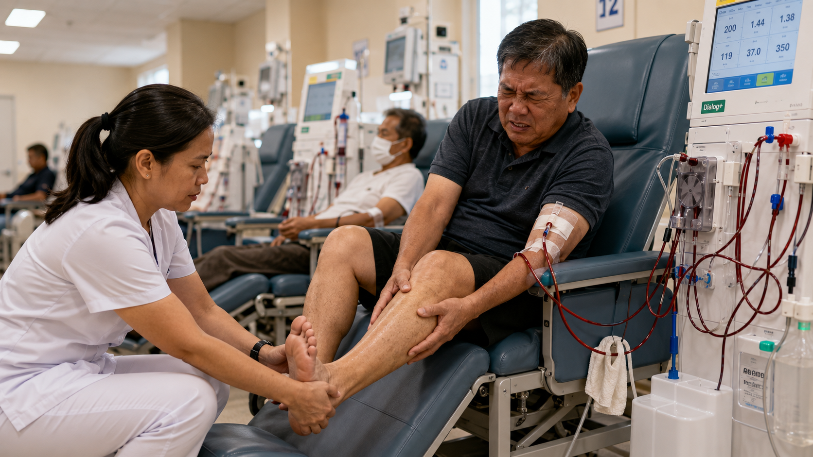
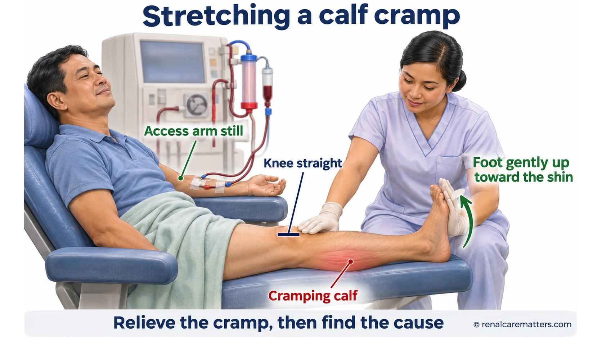
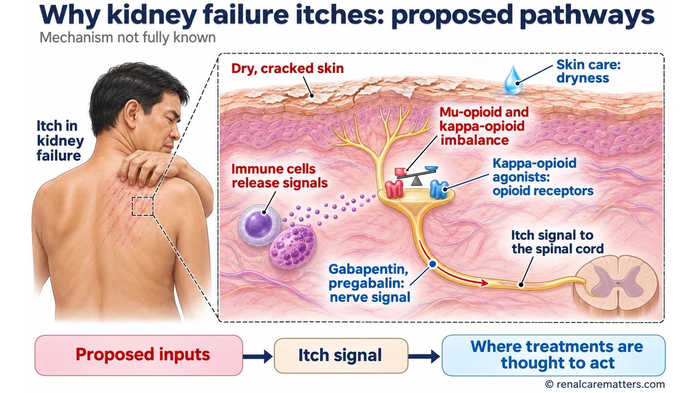
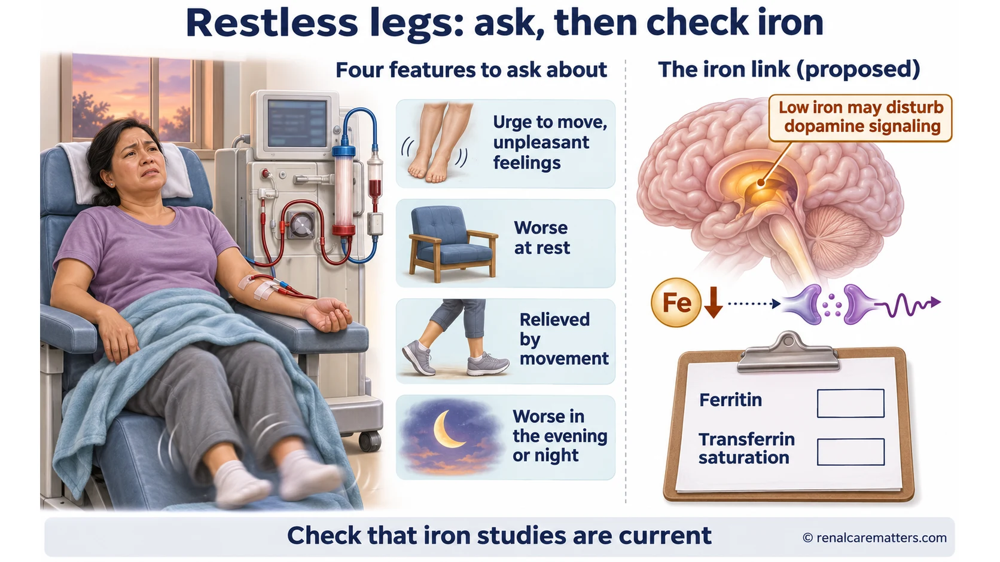
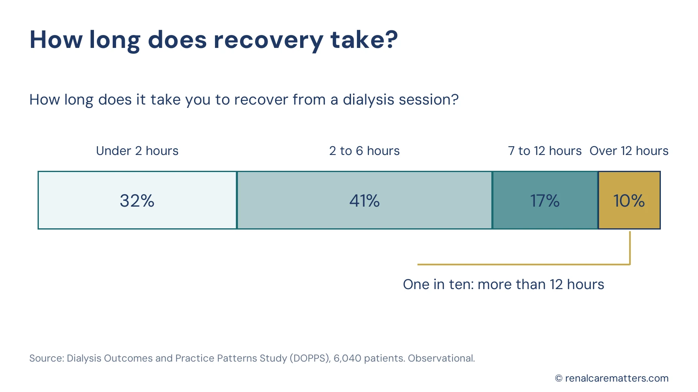

Symptoms in the Chair and at Home: Cramps, Itch, Sleep, Pain, and Fatigue
Cramps, nausea, and headache during a session; itch, poor sleep, pain, and fatigue at home; and when a minor symptom signals a serious cause.
PublishedNailathalaGipatikPepalwal:ReferencesMga SanggunianMga TinubdanReng Reperensya:23Audience: Physicians who cover hemodialysis shifts · attending nephrologists, medical directors, and head nurses who orient themRead timeOras ng pagbasaOras sa pagbasaOras ning pamamasa:
This module is study material for physicians on duty in hemodialysis units. It explains the reasoning behind common decisions; it is not a protocol. At the chairside, follow your unit’s protocol and ask the attending nephrologist for guidance. Doses and cut-off values are set by your unit. Every case is fictional.
Learning objectives
After this module you should be able to
Explain the causes of muscle cramps during dialysis and carry out the bedside response and prevention steps per your unit’s protocol.
Triage nausea, vomiting, headache, itching, back pain, and chest tightness during a session, and name the features that signal a serious cause.
Assess chronic kidney disease–associated pruritus, restless legs syndrome, insomnia, chronic pain, and post-dialysis fatigue, and state what is known about their causes.
Describe the treatments that are supported in dialysis patients and the strength of evidence for each, including difelikefalin, gabapentinoids, intravenous iron for restless legs, exercise, and pain coping skills training.
Measure symptom burden with a simple validated score and track it over time.
Reduce early sign-offs by treating the symptom rather than ending the session, and know when to call the attending nephrologist.
Pre-testBefore you read, answer the 8 self-assessment questions and note your score. After the module, select New set of questions and compare. The difference is what you learned; the questions you still miss are what to reread.
Start here
The big picture, in plain words
In plain wordsPicture a backpack that gets heavier one small stone at a time. No single stone is heavy. A patient carrying itch, poor sleep, aching legs, and a long tiredness after each session is carrying all the stones at once, and each one makes the others harder to bear.
The picture has a limit. Stones sit side by side; symptoms feed one another through shared causes. Uremic retention solutes (wastes that dialysis removes only partly), inflammation, anemia, and the stress of each session act on several symptoms together, and low mood amplifies all of them.
Figure 1 · Key terms for this module
Symptom burdenHow many symptoms a patient carries, how severe, and how much they interfere with life.
Chronic kidney disease–associated pruritus (chronic kidney disease (CKD)-aP)Itch caused by kidney failure, also called uremic pruritus.
Restless legs syndrome (RLS)An urge to move the legs at rest, worse in the evening, eased by movement.
GabapentinoidsGabapentin and pregabalin, nerve-calming drugs cleared by the kidneys.
Kappa-opioid agonistA drug that stimulates kappa-opioid receptors, which damp itch. Difelikefalin is one.
Recovery timeThe hours a patient needs after a session to feel normal.
Early sign-offEnding a session early at the patient’s request.
Most of these symptoms do not threaten life, which is why they are overlooked. A few “small” complaints are the first sign of something serious. Your work is to ask, to measure, to offer what is safe, and to recognize the complaint that is not small.
Opening case · fictional
Case: He signs off early every Friday
Mr. Eduardo Manalastas, 55, is a jeepney operator who has been on hemodialysis for three years. He dialyzes on Mondays, Wednesdays, and Fridays, four hours each session. On Fridays he often asks to come off 45 to 60 minutes early (illustrative values).
Today is Friday. At hour three he again asks to stop. His calves cramp. His skin itches “so much I cannot sleep.” In the evening his legs “will not stay still.” He sleeps about four hours a night. He says it takes him “until Saturday night” to feel normal after dialysis.
His blood pressure is 128/76 mm Hg and his pulse is 84 per minute and regular. He is 0.8 kg above his target weight. His transferrin saturation, a measure of the iron available for making red cells, was low last month (all values illustrative). The nurse, Ms. Carmela Dizon, has already stretched his calf, and the cramp has eased.
Before reading on, decide:
Is it safe to continue, and what will you do in the next 15 minutes instead of ending the session?
Which of his symptoms have a treatable cause, and what is the first step for each?
What will you measure today, and what will you tell the attending nephrologist?
Keep your answers in mind. The lesson gives you what you need, and the case review near the end shows one sound response.
Lesson · part 1
The miserable but stable patient
Most dialysis patients carry several symptoms at once. Murtagh and colleagues pooled 59 studies of dialysis patients in a systematic review. The weighted average prevalence was 71% for fatigue, 55% for itch, 53% for constipation, 47% for pain, 44% for sleep disturbance, 30% for restless legs, and 27% for depression.1 Ranges were wide because definitions differed.
Why symptoms cluster
A healthy kidney clears waste continuously; dialysis clears it in bursts, and some molecules poorly. Retained solutes and inflammation are thought to act on nerves, skin, muscle, and brain. Sleep loss sits in the middle of this web: itch, restless legs, and pain break sleep, and broken sleep worsens pain, mood, and energy. One treatable symptom therefore often drives two or three others.
Symptoms go unreported
Patients often do not mention symptoms, and staff often do not ask. In the Dialysis Outcomes and Practice Patterns Study (DOPPS), a large international cohort, 17% of patients who were nearly always bothered by itch had not told the dialysis staff. Of 268 medical directors, 69% underestimated how common itch was in their own unit.2
A 2022 Kidney Disease: Improving Global Outcomes (KDIGO) Controversies Conference concluded that care systems should provide individualized symptom assessment and management, led by nephrology teams, while acknowledging that evidence for many treatments is limited.3 These are conference conclusions, not graded recommendations.
Symptom
Question to ask on your round
Where this module covers it
Cramps
Do your muscles cramp during or after dialysis? When in the session?
Muscle cramps
Itch
How bad was your worst itch this week, from 0 to 10? Does it wake you?
Itch
Restless legs
Do your legs feel an urge to move when you sit or lie still, especially in the evening?
Restless legs and poor sleep
Sleep
How many hours do you sleep? Do you snore or fall asleep during the day?
Restless legs and poor sleep
Pain
Where does it hurt, how strong is it from 0 to 10, and what does it stop you doing?
Chronic pain
Tiredness
How long does it take you to recover from a dialysis session?
Fatigue and recovery
Mood
Have you felt down or lost interest in things lately?
Module 26
RememberIf you do not ask, the patient will not tell you. Ask one question each round: what bothers you most this week?
Lesson · part 2
Symptoms during the session: common cause, first step, when to worry
Think of a traffic light for each symptom. Green is a common cause the protocol handles. Amber means look for the cause. Red means stop and call. The vital signs decide the color more often than the symptom does (Module 11).
The usual causes come from the session itself. Fluid removal lowers plasma volume and pressure (Module 13). Rapid removal of urea can shift water into the brain and cause headache, nausea, and sometimes confusion, a picture called dialysis disequilibrium. Some patients react to the dialyzer or tubing in the first minutes (Module 16).4
Symptom
Common cause
First step, per your unit’s protocol
When to worry
Cramps
Fluid removal faster than refilling. Low pressure. Large weight gain
Check the pressure. Stretch the muscle. Fluid steps as the protocol allows
Low pressure. Cramps every session. Cramps early in the session
Nausea and vomiting
Falling pressure. Disequilibrium early in dialysis life. Eating during the session
Check the pressure. Treat a low pressure first. Turn the patient to the side if vomiting
Confusion, severe headache, chest pain, abdominal pain, or a low pressure that does not recover
Headache
High or low pressure. Caffeine withdrawal. Disequilibrium
Check the pressure and the blood sugar per protocol
Sudden, severe, or “worst ever” headache. Vomiting. A new neurologic sign. Very high pressure
Itch
Chronic kidney disease–associated pruritus, often worse in the chair
Skin care. Record a 0-to-10 score
Itch with flushing, wheeze, or swelling in the first minutes of a session
Back pain
Posture in the chair. Musculoskeletal pain
Reposition. Check the pressure
Onset in the first minutes with chest tightness, or with translucent red blood in the line
Chest tightness
Many causes, some dangerous
Vital signs and an electrocardiogram (ECG) per protocol
Always. Follow Module 15 for chest pain and Module 16 for early reactions
This table rests on physiology and clinical experience, not trials. For disequilibrium (Module 12), a systematic review of 49 small reports covering 321 patients of all ages listed nausea (25.2%), headache (24.8%), vomiting (23.9%), and cramps (18.1%) as the commonest symptoms.5 Use it for the symptom list only.
Figure 2. Low blood pressure during dialysis at a glance. Cramps, nausea, and yawning are often its first signs.
Nausea and vomiting
Figure 3 · Nausea and vomiting during dialysis
Protect the airwayTurn the head and body to the side if vomiting. Do not sit up a patient whose pressure may be low.
Check vital signsA low pressure, the commonest cause, is treated first (Module 13).
Ask what came with itHeadache, confusion, chest pain, abdominal pain, or fever point beyond the session.
Look at the contextTime into the session, fluid removed, a recent meal, and whether the patient is new to dialysis.
Treat per protocolOnce a dangerous cause is unlikely.
CallFor vomiting with confusion, severe headache, chest or abdominal pain, or a pressure that does not recover.
Headache
Most headaches during dialysis recur in the same mild pattern. Common contributors are a change in pressure, caffeine withdrawal, and, in new patients, disequilibrium.4 A headache new in character is different.
Figure 4 · Headache during dialysis
Check the pressureVery high and low pressures both cause headache. Treat per protocol.
Ask about the patternThe usual headache, or new, sudden, or the worst ever?
Check the brainAlertness, speech, pupils, and limb strength.
Check the blood sugarPer protocol, in a patient with diabetes.
Treat the usual headacheAs the protocol allows.
Call at once for red flagsSudden severe headache, vomiting with confusion, or a new neurologic sign. Start the emergency protocol while you call, and report the heparin given (Modules 18 and 19).
Stop and callStop and call the attending nephrologist when any “minor” symptom comes with abnormal vital signs, when a headache is sudden or severe, when vomiting comes with confusion, when there is chest pain or pressure, or when a symptom begins within minutes of starting with a new dialyzer. Follow the unit’s protocol while you call.
RememberCheck the vital signs before you treat the symptom. Then treat the cause, not only the symptom.
Lesson · part 3
Muscle cramps
Picture a muscle whose blood supply and salt balance changed faster than it could adapt. A cramp is a sustained, painful, involuntary contraction, usually of the calves, feet, or thighs, late in the session.
What breaks
The machine removes water only from the blood, and refilling from the tissues has a speed limit (Module 13). When removal outruns refilling, plasma volume falls. The body tightens the limb vessels to protect the vital organs, and the muscles receive less blood. Plasma sodium and osmolality also shift during the session. Reduced muscle perfusion and these shifts around nerve endings are thought to trigger the cramp.4 The exact mechanism is not settled.
This chain explains the pattern: cramps cluster late in the session, after large weight gains, in patients whose target weight (dry weight, Module 8) is set too low, and with a falling pressure.

Figure 5. A cramp in the chair. The nurse stretches the muscle while you check the pressure.
At the chair
The nurse stretches the muscle, and a low pressure gets the Module 13 response. Your task is to read the cause.

Figure 6. Stretching a calf cramp in the chair: knee straight, foot pulled gently up toward the shin, access arm kept still. The stretch relieves the cramp; the cause still needs to be found.
Question you ask
What it tells you
Whom it concerns
What is the pressure and pulse now?
A cramp with a low pressure is a hypotension episode
You, now (Module 13)
How much weight was gained since the last session?
A large gain means a fast fluid removal rate
The patient and the dietitian
Is it near target weight, and every session?
The target may be too low. A pattern is a prescription problem
The attending nephrologist
Is it early in the session?
An early cramp with little fluid removed suggests another cause
You, and the nephrologist
What the evidence says about preventing cramps
No drug is established. A 2024 systematic review found 13 studies of nine drugs. Vitamins C and E were the most studied and showed positive results, but only the L-carnitine and creatine trials were at low risk of bias.6 A meta-analysis found fewer cramps with L-carnitine in five small trials with 147 participants (pooled odds ratio 0.22), but a trial sequential analysis, a test of whether enough data have accumulated, judged the evidence insufficient.7 In a review of aerobic exercise, a single trial reported less cramping.8
All of this is low-certainty evidence. The surest prevention follows the physiology: a smaller weight gain, a slower fluid removal rate, and a correct target weight. These belong to the prescription, so you report the pattern and the nephrologist decides.
RememberA cramp is a message about fluid removal. Treat the cramp, then read the message.
Lesson · part 4
Itch (chronic kidney disease–associated pruritus)
Picture an alarm wired to the wrong switch. The skin is not damaged, but the nerve sends the itch signal anyway. Scratching relieves it briefly, damages the skin, and damaged skin itches more.
What is thought to happen
The mechanism is not fully known. Proposed contributors are immune dysregulation, dry skin, retained uremic solutes, and an imbalance in the body’s own opioid system: mu-opioid signaling tends to promote itch, while kappa-opioid signaling is thought to damp it. This is the rationale for kappa-opioid drugs.9 These are hypotheses that guide treatment, not proven causes.

Figure 7. Proposed pathways of itch in kidney failure. The mechanism is not fully known. Treatments are thought to act on the nerve signal (gabapentinoids) or on the opioid balance (kappa-opioid agonists), and skin care addresses dryness.
Two common beliefs need correction. In DOPPS, medical directors ranked control of a high phosphate and a low Kt/V (a surrogate measure of dialysis dose) as the most important interventions for itch. Neither was associated with itch in the patient data.2 Both matter for other reasons, but not as itch treatments. Antihistamines were the commonest first-line treatment, yet they lack good trial evidence for this itch.2,10
What the evidence shows
A Cochrane review included 92 randomized trials with 4,466 participants. Gabapentin and pregabalin reduced itch by about 4.95 cm on a 10-cm visual analog scale versus placebo (5 studies, 297 participants). Kappa-opioid agonists, including nalfurafine, reduced it by about 1.05 cm (6 studies, 661 participants). The review rated both findings high-certainty evidence. Ondansetron had little or no effect. Many trials were small, and harms were poorly reported.10 An earlier review of 44 trials agreed.11
Difelikefalin is a kappa-opioid agonist that acts mainly outside the brain, given intravenously three times a week after dialysis. The KALM-1 phase 3 trial randomized 378 patients with moderate to severe itch to difelikefalin or placebo for 12 weeks. A fall of at least 3 points on the Worst Itch Numerical Rating Scale (WI-NRS, 0 to 10) occurred in 51.9% of the difelikefalin group and 30.9% of the placebo group. Diarrhea, dizziness, and vomiting were more common with the drug.9 A pooled analysis of KALM-1 and its companion trial KALM-2 (851 patients) found 51.1% versus 35.2%.12 The manufacturer funded both trials.
Illustrative trial arithmetic. Absolute risk reduction (ARR) = response with drug − response with placebo. Number needed to treat (NNT) = 100 ÷ ARR in percentage points, rounded up. KALM-1: 51.9% − 30.9% = 21.0 percentage points. NNT = 100 ÷ 21.0 = 4.8, so about 5 patients treated for 12 weeks for one more responder.9 Pooled KALM-1 and KALM-2: 51.1% − 35.2% = 15.9 points. NNT = 100 ÷ 15.9 = 6.3, so about 7.12 What it tells you: the drug helps a meaningful minority beyond placebo. What it does not: which patient will respond. The 31% placebo response shows how much itch improves with attention and time alone.
The trade: gabapentinoids show larger effects in small trials but accumulate in kidney failure and cause drowsiness and falls (Module 20); difelikefalin has a modest effect in larger trials, and its availability in the Philippines was not verified for this module.
Figure 8 · Itch treatment ladder (the nephrologist prescribes)
MeasureWorst itch over the past week, 0 to 10. Record it.
Look at the skinDryness, scratch marks, nodules, infection, or a rash suggesting another cause.
Skin care for everyoneMoisturizer, short nails, lukewarm baths, and loose cotton clothing.
Review the basics with the nephrologistDialysis adequacy, phosphate, and other causes such as liver disease or a drug reaction.
Drug treatment by the nephrologistGabapentinoids and kappa-opioid agonists have the strongest evidence. Choice, dose, and monitoring belong to the nephrologist.
TrackRepeat the score monthly and report the change.
RememberItch in dialysis is common, under-reported, and treatable. Measure it like a vital sign.
Lesson · part 5
Restless legs and poor sleep
Picture legs that want to move at the very moment the patient must sit still for four hours. Restless legs syndrome (RLS) is an urge to move the legs, usually with unpleasant feelings, that starts or worsens at rest, eases with movement, and is worse in the evening. Diagnosis rests on these features and on excluding mimics such as cramps and neuropathy (the International Restless Legs Syndrome Study Group criteria).13
How common it is
A 2024 meta-analysis of 57 studies with 12,573 maintenance hemodialysis patients estimated a pooled prevalence of 24.0%.14 A systematic review of RLS in chronic kidney disease found most dialysis studies reporting 15% to 30%, two to three times the rate in the general population.15
Why iron matters
Movement control depends on dopamine signaling in the brain, and the brain needs iron to handle dopamine. Low brain iron is thought to disturb this pathway. Dialysis patients lose iron through blood left in the circuit, blood tests, and bleeding, so iron deficiency is common (Module 21) and is a treatable contributor worth excluding first.

Figure 9. Restless legs syndrome: four features to ask about, and the link to iron. Iron deficiency is one treatable contributor, so check that iron studies are current.
The trial evidence is thin. In a double-blind trial, 25 dialysis patients with RLS received one infusion of intravenous iron dextran or saline. RLS scores improved with iron at 1 and 2 weeks; by 4 weeks the difference was no longer significant.13 A systematic review lists dopamine-acting drugs, gabapentinoids, vitamins C and E, intravenous iron, and exercise as studied treatments, with limited data.15 Two exercise trials reported fewer RLS symptoms, with moderate to high risk of bias.8 Drug choice belongs to the nephrologist.
Check the iron indices with the site’s transferrin saturation calculator; iron treatment follows the anemia plan (Module 21).
Poor sleep
Insomnia in dialysis rarely has one cause. Look for the drivers before anyone reaches for a sleeping tablet.
Figure 10 · Sleep: causes to look for
ItchScratching at night breaks sleep. Treating itch often restores it.
PainAsk whether pain wakes the patient.
Restless legsThe urge to move peaks at bedtime.
Sleep apneaLoud snoring, pauses in breathing, and daytime sleepiness. Fluid overload can worsen it.
MoodLow mood and worry disturb sleep. Module 26 covers screening.
Napping in the chairA long sleep during dialysis steals from the night.
Shift timeAn early-morning shift means waking before dawn three times a week.
Proven treatments are scarce. In a randomized trial at 26 dialysis units in the United States, 126 patients with chronic insomnia received cognitive behavioral therapy for insomnia (CBT-I), trazodone, or placebo for 6 weeks. Neither beat placebo on the Insomnia Severity Index at 7 or 25 weeks. Serious adverse events, particularly cardiovascular events, were more frequent with trazodone.16 The trial was modest and most participants had mild or moderate insomnia, so it does not close the question. It does argue against reflex sedatives.
The site’s Pittsburgh Sleep Quality Index calculator describes sleep quality. Report snoring with daytime sleepiness as possible sleep apnea.
RememberBefore any pill for restless legs, ask about iron. Before any pill for sleep, ask why the patient cannot sleep.
Lesson · part 6
Chronic pain
Picture the usual pain ladder, from simple analgesics to strong opioids. In kidney failure the rungs are shorter and more slippery: several drugs, or their breakdown products, are cleared by the kidneys and build up, so a usual dose can cause confusion, sedation, or a fall.
Where the pain comes from
Sources include joints and muscles, diabetic nerve damage, the access, bone disease, and, rarely, calciphylaxis, a painful calcification of small skin vessels with dark, tender lesions (Module 21). The cause comes before the drug.
What the evidence shows
A review from the Hemodialysis Opioid Prescription Effort (HOPE) Consortium reports that half of hemodialysis patients have chronic moderate to severe pain. Opioids are prescribed more often than in the general population, and their use is associated with more illness and death, partly because sicker patients receive more opioids. Evidence that opioids work for chronic pain in dialysis patients is lacking.17
Morphine and codeine are not recommended because their metabolites accumulate and cause neurotoxicity. Buprenorphine is discussed as a safer option.18,17 These are narrative reviews based on pharmacology, not trials. Tramadol and nonsteroidal anti-inflammatory drugs (NSAIDs) carry their own risks (Module 20).
A nondrug treatment now has trial support. The HOPE Consortium trial randomized 643 hemodialysis patients with chronic pain to pain coping skills training (12 weekly coach-led sessions by video or telephone, then 12 weeks of daily automated calls) or usual care. At 12 weeks, pain interference on the Brief Pain Inventory (0 to 10) fell 0.49 points more with training. A clinically meaningful improvement, a fall of more than 1 point, occurred in 50.9% versus 36.6%. The effect persisted at 24 weeks and had diminished by 36 weeks.19
Illustrative trial arithmetic: averages and responder rates. ARR = 50.9% − 36.6% = 14.3 percentage points. NNT = 100 ÷ 14.3 = 7.0, so about 7 patients trained for one more meaningful improvement at 12 weeks.19 Mean between-group difference = 0.49 points on a 0-to-10 scale. What it tells you: a small average change can hide a useful benefit in a subset of patients. What it does not: which patients will respond, or whether the benefit lasts beyond six months.
Figure 11 · Chronic pain approach
AssessWhere, how strong from 0 to 10, and what it stops the patient doing.
Find the causeJoints, nerves, the access, bone, skin lesions, or a new fracture or infection.
Nondrug measuresPositioning, heat or cold, activity, and coping skills support where available.
Review every analgesicPrescription, over-the-counter, and herbal products.
Flag drugs that accumulateMorphine, codeine, tramadol, gabapentinoids, and NSAIDs (Module 20).
ReportThe score, the suspected cause, and the drug list. The nephrologist chooses any drug and dose.
Do not start or escalate an opioid in the chair. Drowsiness, confusion, or limb jerking (myoclonus) on an opioid or a gabapentinoid is toxicity until proven otherwise.
Stop and callStop and call the attending nephrologist for new severe pain, painful dark or ulcerated skin lesions that may be calciphylaxis, pain with fever, or drowsiness, confusion, or myoclonus in a patient taking an opioid or a gabapentinoid. Follow the unit’s protocol for the first minutes while you call.
RememberIn kidney failure, ask what is causing the pain and what the patient is already taking before anyone adds a drug.
Lesson · part 7
Fatigue and the long recovery after dialysis
Picture a phone that takes all night to recharge after each use. The picture has a limit: fatigue has several sources that add together. Anemia reduces oxygen delivery. Inflammation acts on the brain to produce tiredness and withdrawal. Muscle loss reduces reserve (Module 23). Low mood and broken sleep add their share. The session adds fluid removal, falls in pressure, and solute shifts.
Recovery time as a measure
Rayner and colleagues asked 6,040 DOPPS patients one question: “How long does it take you to recover from a dialysis session?” 32% answered under 2 hours, 41% 2 to 6 hours, 17% 7 to 12 hours, and 10% more than 12 hours. Longer recovery was associated with greater fluid removal during the session and a lower sodium concentration in the dialysis fluid. Compared with 2 to 6 hours, recovery longer than 12 hours was associated with a higher risk of first hospital admission (adjusted hazard ratio 1.22) and death (1.47).20

Figure 12. Recovery time after dialysis in a large international cohort. One patient in ten took more than 12 hours. Longer recovery was associated with more hospital admissions and deaths in this observational study.
This prospective cohort shows an association, and the answers are subjective. Sicker patients may both recover slowly and die sooner, and no trial has shown that shortening recovery time improves survival. The question is still worth asking because it is quick and points to contributors you can report.
An international Standardized Outcomes in Nephrology–Hemodialysis (SONG-HD) consensus workshop prioritized fatigue as a core outcome for trials, measured by its impact on life participation.21 Aerobic exercise improved fatigue in one trial.8
Contributor
What you check
Who acts on it
Anemia
The latest hemoglobin, a surrogate marker, and the iron indices
The nephrologist, per the anemia plan (Module 21)
Large fluid removal
Weight gains and the fluid removal rate
The patient, the dietitian, and the nephrologist
Falls in pressure
Episodes of low pressure in recent sessions
The nephrologist (Module 13)
Poor sleep
Hours slept, itch, restless legs, and snoring
This module, then the nephrologist
Low mood
Loss of interest and low mood
Module 26
Inactivity and muscle loss
Walking distance and daily activity
Module 23
Report a long recovery, and especially one that is getting longer. A change in a stable patient can be the first sign of a new problem, such as a falling hemoglobin or an infection.
RememberAsk how long it takes to recover. The answer is quick to get and tells you a great deal.
Lesson · part 8
Measuring symptoms and reducing early sign-offs
What gets measured gets treated. “A bit itchy” is easy to dismiss; a monthly number shows whether a treatment worked.
Simple validated scores
The Dialysis Symptom Index asks about 30 symptoms and how much each bothers the patient. Its developers reported moderate test-retest agreement (overall kappa 0.48).22 The modified Edmonton Symptom Assessment System (ESAS) is shorter: the patient rates a short list of common symptoms from 0 to 10. In 261 hemodialysis patients followed for 6 months, the change in ESAS score accounted for 46% of the change in mental and 34% of the change in physical health-related quality of life.23
The site’s patient-reported outcome calculator scores the Dialysis Symptom Index, the Kidney Disease Quality of Life (KDQOL-36) symptom subscale, and the Integrated Palliative care Outcome Scale–Renal (IPOS-Renal).
Figure 13 · Symptom score at the chair
Pick one toolUse the score your unit has chosen. Do not mix tools from month to month.
Ask the patient to rateEach symptom from 0 (none) to 10 (worst possible). Help with reading if needed, without suggesting answers.
Record the top symptomWrite the worst-rated symptom and its score in the note.
CompareLook at last month’s scores. Report the change.
Act on high scoresA high or rising score goes to the attending nephrologist.
Illustrative symptom tracking. Change = later score − earlier score. Month 1: itch 8, sleep 7. Month 3, after the nephrologist’s treatment: itch 3, sleep 5. Itch: 3 − 8 = −5. Sleep: 5 − 7 = −2. What it tells you: itch improved a great deal and sleep improved less, so sleep may have another driver (restless legs, pain, apnea, or mood).23What it does not: why the scores changed. Single scores vary from day to day, so report the trend, not one value.
Early sign-offs
A request to come off early has a reason: a cramp, itch, back pain, boredom, transport, a family duty, or worry. Most can be solved without ending the treatment.
Figure 14 · When a patient asks to sign off early
Check vital signsA request to stop can be the first sign of a low pressure.
Ask whyUse an open question and listen.
Treat the cause per protocolStretch a cramp, reposition for back pain, give skin care for itch.
Solve the practical problemAsk the charge nurse or social worker about transport and shift times.
If the patient still leavesRespect the decision. Explain what shortened time means and record the minutes lost and the reason.
Inform the nephrologistReport every shortened session, and a pattern above all.
Illustrative arithmetic: treatment time lost. Weekly prescribed time = minutes per session × sessions per week. 240 minutes × 3 = 720 minutes per week. Signing off 50 minutes early once a week: 50 ÷ 720 × 100 = 6.9% of weekly time lost. Over 4 weeks: 50 × 4 = 200 minutes, about 3.3 hours, close to one full 4-hour session. What it tells you: small, repeated losses add up. What it does not: the effect on the delivered dialysis dose. Module 7 covers dose, and Module 26 covers missed and shortened sessions.
The patient may stop; your role is to inform the decision and address the cause. The session length belongs to the nephrologist, who needs to know when it is not delivered.
Stop and callStop and call the attending nephrologist when a patient who asks to stop has abnormal vital signs, new chest pain, confusion, or another red flag. Follow the unit’s protocol for the first minutes while you call.
RememberWhen a patient asks to sign off early, find the reason first. A treated cause often keeps the patient in the chair.
On the floor
Real situations: problems and solutions
These are fictional but typical. For each one, cover the answer, decide what you would do, then compare. Where a step depends on local rules, your unit’s procedure and your supervisor’s direction come first.
Cramps with a low pressure
What you see
In hour three a woman grips her thigh and cries out with a cramp. She has yawned twice. Her pressure is 84/50 mm Hg; it was 140/80 at the start. She arrived well above her target weight.
What is likely going on
This is not a minor cramp. The cramp and the low pressure have one cause: fluid removal has outrun refilling from the tissues.
What to do
Treat the pressure first, as Module 13 describes: lay her back, ask the nurse to stop fluid removal, and follow the unit’s protocol for the next steps. Stretch the muscle. Call the attending nephrologist about the rest of the session.
Why it matters
A cramp with abnormal vital signs is a hypotension episode until proven otherwise. Treating only the muscle would miss it.
The headache that is different
What you see
A man with long-standing hypertension says he has the worst headache of his life, which began suddenly ten minutes ago. He vomits once and is slow to answer. His pressure is 210/115 mm Hg.
What is likely going on
A sudden severe headache with vomiting and slowed responses suggests bleeding in the brain or another neurologic emergency. It is not a dialysis headache.
What to do
Call for help in the unit and call the attending nephrologist now. Check the pressure, the pulse, the blood sugar, and a brief neurologic examination. Tell the nephrologist how much heparin he received; stopping the session and the heparin is the nephrologist’s decision (Module 19). Follow the unit’s emergency protocol and prepare for transfer. Do not give a pain tablet and wait.
Why it matters
Most headaches on dialysis are benign. The features that separate this one (sudden onset, worst ever, vomiting, a change in alertness) take one minute to ask about.
Itch nobody asked about
What you see
During your round an elderly woman keeps scratching her shins. The skin is dry and covered with scratch marks, and one spot is red and warm. Her chart has no mention of itch.
What is likely going on
She has chronic kidney disease–associated pruritus that has not been reported, with a possible skin infection from scratching.
What to do
Ask her to rate her worst itch this week on a 0-to-10 scale and record it. Examine the warm area and tell the nephrologist about possible infection. Advise moisturizer and short nails. Report the itch score to the attending nephrologist, who decides on treatment.
Why it matters
Patients often do not mention itch, and staff often underestimate it. A number in the chart turns a complaint into a problem that can be tracked.
Sleepy on the new nerve tablet
What you see
A man who started gabapentin for itch two weeks ago is hard to rouse in the chair. His legs twitch. His pressure and blood sugar are normal.
What is likely going on
Gabapentin is cleared by the kidneys and accumulates in kidney failure. Drowsiness and muscle jerks (myoclonus) are signs of toxicity.
What to do
Check his airway, breathing, and vital signs. Call the attending nephrologist at once and report the drug, its start date, and his findings. Ask whether the next dose should be held. Follow the unit’s protocol while you wait.
Why it matters
Drugs that help symptoms can cause new ones in kidney failure. Module 20 covers drugs that accumulate.
The Friday request to stop
What you see
A woman asks to come off 40 minutes early for the third Friday in a row. She says her back aches in the chair and she worries about catching her jeepney before dark.
What is likely going on
Two causes are mixed together: discomfort in the chair and a transport problem. Neither requires ending the treatment.
What to do
Check her vital signs. Ask the nurse to reposition her with a pillow behind her back. Ask the social worker or charge nurse whether her shift time can be changed. If she still signs off, record the minutes lost and inform the attending nephrologist.
Why it matters
Shortened sessions add up to lost treatment time. A small fix to the cause often keeps the patient in the chair.
Field notes
Start every symptom review with the blood pressure and the pulse. A symptom with abnormal vital signs is not minor.
Ask one open question on each round: “What bothers you most this week?” Write the answer in the note.
Record itch, pain, and tiredness as 0-to-10 numbers. Report the change from last month, not only today’s value.
When a patient asks to sign off early, ask why before you agree. The reason is often treatable.
Before anyone starts a sedative or a pain tablet, check the drug list for medicines that accumulate in kidney failure, and leave the choice to the nephrologist.
Case review
Back to the case: He signs off early every Friday
Is it safe to continue, and what will you do instead of ending the session? Yes, on present findings. His pressure and pulse are normal, he is alert, and he has no chest pain or headache, so the cramp is not a hypotension episode. With 0.8 kg left to remove, most of the fluid is already off. You ask what makes him want to stop: the cramp, the itch, and Friday traffic. Ms. Dizon watches the pressure, applies moisturizer to his dry forearms, and repositions him. He agrees to try to finish, knowing he may still choose to stop. If he does, you record the minutes lost and the reason and inform the attending nephrologist.
Which symptoms have a treatable cause? The cramps come late, near his target weight, every Friday. Friday follows a short gap, so a large weight gain is a less likely cause; check it anyway. The target weight may now be too low, so the first step is to report the pattern for a review. The itch is chronic kidney disease–associated pruritus until shown otherwise: score it, examine the skin, start skin care, and report, because effective treatments exist. His evening leg symptoms fit restless legs syndrome, and his transferrin saturation was low, so confirm the iron indices and let the nephrologist decide on iron. His short sleep likely follows the itch and restless legs, so no sedative is started. His long recovery may reflect all of these.
What will you measure and report? A worst-itch score, the four RLS features, hours of sleep and snoring, his recovery time, and the unit’s symptom score. Your report to the attending nephrologist: recurrent Friday cramps near target weight, high itch with dry skin, probable restless legs with a low transferrin saturation, four hours of sleep, recovery into the next evening, and shortened Friday sessions with the minutes lost. You ask for a review of the target weight and the itch and iron plans. Each decision is the nephrologist’s.
Skills lab · with your preceptor
Skills checklist: Cramp relief and symptom review at the chair
Perform this review on a simulated patient or a colleague in a dialysis chair while your preceptor observes and plays the nurse and the patient. Your preceptor rates each step as satisfactory, needs practice, or not observed. Steps marked Critical must all be satisfactory before sign-off. This checklist supports supervised learning; your unit’s own procedure and competency form are the authority. A printable version of every checklist is on the trainer page.
CriticalChecks blood pressure and pulse before addressing any symptom.
CriticalRecognizes a symptom with abnormal vital signs as not minor and escalates per the unit’s protocol.
Supports the nurse’s stretch technique and positioning for a cramp, keeping the access arm still.
Reviews weight gain, target weight, and fluid removal rate as causes of cramps, and states whom to tell about a pattern.
CriticalAsks for red flags with a headache or vomiting: sudden onset, worst ever, confusion, or a new neurologic sign.
Asks the four restless legs questions and checks the date of the last iron studies.
Scores itch on a 0-to-10 scale and inspects the skin for dryness, scratches, and infection.
Asks the recovery-time question and records the answer.
Completes the unit’s symptom score and records the top symptom in the note.
CriticalReviews the analgesic and sedative list, including over-the-counter and herbal products, and flags drugs that accumulate.
CriticalOffers a treatable-cause alternative to an early sign-off, documents any shortened time, and informs the nephrologist.
CriticalReports to the attending nephrologist in Situation, Background, Assessment, Recommendation (SBAR) format without changing the prescription.
Placement activity. For two weeks, ask each patient on your shift the recovery-time question and the open question about what bothers them most. Score itch in every patient who mentions it. Review the list with your preceptor and choose two patients whose symptoms you will report to the attending nephrologist.
Self-assessment
Check your understanding
Each visit draws 8 questions at random from this module’s 15-question bank. Choose the single best answer for each, then select Check answers; an explanation appears under the best answer. Select New set of questions for a different mix. A good target is 7 of 8 on two different sets. Nothing you select is sent anywhere; scoring happens in your browser.
Murtagh, F. E., Addington-Hall, J., & Higginson, I. J. (2007). The prevalence of symptoms in end-stage renal disease: A systematic review. Advances in Chronic Kidney Disease, 14(1), 82–99. https://doi.org/10.1053/j.ackd.2006.10.001
Rayner, H. C., Larkina, M., Wang, M., Graham-Brown, M., van der Veer, S. N., Ecder, T., Hasegawa, T., Kleophas, W., Bieber, B. A., Tentori, F., Robinson, B. M., & Pisoni, R. L. (2017). International comparisons of prevalence, awareness, and treatment of pruritus in people on hemodialysis. Clinical Journal of the American Society of Nephrology, 12(12), 2000–2007. https://doi.org/10.2215/CJN.03280317
Mehrotra, R., Davison, S. N., Farrington, K., Flythe, J. E., Foo, M., Madero, M., Morton, R. L., Tsukamoto, Y., Unruh, M. L., Cheung, M., Jadoul, M., Winkelmayer, W. C., Brown, E. A., & Conference Participants. (2023). Managing the symptom burden associated with maintenance dialysis: Conclusions from a Kidney Disease: Improving Global Outcomes (KDIGO) Controversies Conference. Kidney International, 104(3), 441–454. https://doi.org/10.1016/j.kint.2023.05.019
Daugirdas, J. T., Blake, P. G., & Ing, T. S. (Eds.). (2015). Handbook of dialysis (5th ed.). Wolters Kluwer.
Raina, R., Davenport, A., Warady, B., Vasistha, P., Sethi, S. K., Chakraborty, R., Khooblall, P., Agarwal, N., Vij, M., Schaefer, F., Malhotra, K., & Misra, M. (2022). Dialysis disequilibrium syndrome (DDS) in pediatric patients on dialysis: Systematic review and clinical practice recommendations. Pediatric Nephrology, 37(2), 263–274. https://doi.org/10.1007/s00467-021-05242-1
Mantilla-Manosalva, N., Guadarrama, S., Bedoya-Muñoz, L. J., Giraldo-Moreno, S., Cuellar-Valencia, L., Iriarte-Aristízabal, M. F., León, M. X., Mendoza-Montenegro, F. A., & Correa-Morales, J. E. (2024). Pharmacological treatment for dialysis-related muscle cramps: A systematic review. Seminars in Dialysis, 37(6), 415–423. https://doi.org/10.1111/sdi.13223
Chewcharat, A., Chewcharat, P., Liu, W., Cellini, J., Phipps, E. A., Melendez Young, J. A., & Nigwekar, S. U. (2022). The effect of levocarnitine supplementation on dialysis-related hypotension: A systematic review, meta-analysis, and trial sequential analysis. PLOS ONE, 17(7), Article e0271307. https://doi.org/10.1371/journal.pone.0271307
Hargrove, N., El Tobgy, N., Zhou, O., Pinder, M., Plant, B., Askin, N., Bieber, L., Collister, D., Whitlock, R., Tangri, N., & Bohm, C. (2021). Effect of aerobic exercise on dialysis-related symptoms in individuals undergoing maintenance hemodialysis: A systematic review and meta-analysis of clinical trials. Clinical Journal of the American Society of Nephrology, 16(4), 560–574. https://doi.org/10.2215/CJN.15080920
Fishbane, S., Jamal, A., Munera, C., Wen, W., Menzaghi, F., & KALM-1 Trial Investigators. (2020). A phase 3 trial of difelikefalin in hemodialysis patients with pruritus. New England Journal of Medicine, 382(3), 222–232. https://doi.org/10.1056/NEJMoa1912770
Hercz, D., Jiang, S. H., & Webster, A. C. (2020). Interventions for itch in people with advanced chronic kidney disease. Cochrane Database of Systematic Reviews, 2020(12), Article CD011393. https://doi.org/10.1002/14651858.CD011393.pub2
Simonsen, E., Komenda, P., Lerner, B., Askin, N., Bohm, C., Shaw, J., Tangri, N., & Rigatto, C. (2017). Treatment of uremic pruritus: A systematic review. American Journal of Kidney Diseases, 70(5), 638–655. https://doi.org/10.1053/j.ajkd.2017.05.018
Topf, J., Wooldridge, T., McCafferty, K., Schömig, M., Csiky, B., Zwiech, R., Wen, W., Bhaduri, S., Munera, C., Lin, R., Jebara, A., Cirulli, J., & Menzaghi, F. (2022). Efficacy of difelikefalin for the treatment of moderate to severe pruritus in hemodialysis patients: Pooled analysis of KALM-1 and KALM-2 phase 3 studies. Kidney Medicine, 4(8), Article 100512. https://doi.org/10.1016/j.xkme.2022.100512
Sloand, J. A., Shelly, M. A., Feigin, A., Bernstein, P., & Monk, R. D. (2004). A double-blind, placebo-controlled trial of intravenous iron dextran therapy in patients with ESRD and restless legs syndrome. American Journal of Kidney Diseases, 43(4), 663–670. https://doi.org/10.1053/j.ajkd.2003.11.021
Liu, Y., Du, Q., & Jiang, Y. (2024). Prevalence of restless legs syndrome in maintenance hemodialysis patients: A systematic review and meta-analysis. Sleep Medicine, 114, 15–23. https://doi.org/10.1016/j.sleep.2023.11.1138
Safarpour, Y., Vaziri, N. D., & Jabbari, B. (2023). Restless legs syndrome in chronic kidney disease: A systematic review. Tremor and Other Hyperkinetic Movements, 13, Article 10. https://doi.org/10.5334/tohm.752
Mehrotra, R., Cukor, D., McCurry, S. M., Rue, T., Roumelioti, M. E., Heagerty, P. J., & Unruh, M. (2024). Effectiveness of existing insomnia therapies for patients undergoing hemodialysis: A randomized clinical trial. Annals of Internal Medicine, 177(2), 177–188. https://doi.org/10.7326/M23-1794
Tobin, D. G., Lockwood, M. B., Kimmel, P. L., Dember, L. M., Eneanya, N. D., Jhamb, M., Nolin, T. D., Becker, W. C., Fischer, M. J., & HOPE Consortium. (2022). Opioids for chronic pain management in patients with dialysis-dependent kidney failure. Nature Reviews Nephrology, 18(2), 113–128. https://doi.org/10.1038/s41581-021-00484-6
Coluzzi, F., Caputi, F. F., Billeci, D., Pastore, A. L., Candeletti, S., Rocco, M., & Romualdi, P. (2020). Safe use of opioids in chronic kidney disease and hemodialysis patients: Tips and tricks for non-pain specialists. Therapeutics and Clinical Risk Management, 16, 821–837. https://doi.org/10.2147/TCRM.S262843
Dember, L. M., Hsu, J. Y., Mehrotra, R., Cavanaugh, K. L., Kalim, S., Charytan, D. M., Fischer, M. J., Jhamb, M., Johansen, K. L., Becker, W. C., Pellegrino, B., Eneanya, N. D., Schrauben, S. J., Pun, P. H., Unruh, M. L., Morasco, B. J., Mehta, M., Miyawaki, N., Penfield, J., . . . HOPE Consortium. (2025). Pain coping skills training for patients receiving hemodialysis: The HOPE Consortium randomized clinical trial. JAMA Internal Medicine, 185(2), 197–207. https://doi.org/10.1001/jamainternmed.2024.7140
Rayner, H. C., Zepel, L., Fuller, D. S., Morgenstern, H., Karaboyas, A., Culleton, B. F., Mapes, D. L., Lopes, A. A., Gillespie, B. W., Hasegawa, T., Saran, R., Tentori, F., Hecking, M., Pisoni, R. L., & Robinson, B. M. (2014). Recovery time, quality of life, and mortality in hemodialysis patients: The Dialysis Outcomes and Practice Patterns Study (DOPPS). American Journal of Kidney Diseases, 64(1), 86–94. https://doi.org/10.1053/j.ajkd.2014.01.014
Ju, A., Unruh, M., Davison, S., Dapueto, J., Dew, M. A., Fluck, R., Germain, M., Jassal, S. V., Obrador, G., O’Donoghue, D., Josephson, M. A., Craig, J. C., Viecelli, A., O’Lone, E., Hanson, C. S., Manns, B., Sautenet, B., Howell, M., Reddy, B., . . . SONG-HD Fatigue Workshop Collaborators. (2018). Establishing a core outcome measure for fatigue in patients on hemodialysis: A Standardized Outcomes in Nephrology–Hemodialysis (SONG-HD) consensus workshop report. American Journal of Kidney Diseases, 72(1), 104–112. https://doi.org/10.1053/j.ajkd.2017.12.018
Weisbord, S. D., Fried, L. F., Arnold, R. M., Rotondi, A. J., Fine, M. J., Levenson, D. J., & Switzer, G. E. (2004). Development of a symptom assessment instrument for chronic hemodialysis patients: The Dialysis Symptom Index. Journal of Pain and Symptom Management, 27(3), 226–240. https://doi.org/10.1016/j.jpainsymman.2003.07.004
Davison, S. N., Jhangri, G. S., & Johnson, J. A. (2006). Longitudinal validation of a modified Edmonton symptom assessment system (ESAS) in haemodialysis patients. Nephrology Dialysis Transplantation, 21(11), 3189–3195. https://doi.org/10.1093/ndt/gfl380
Educational study material for physicians. Does not replace the attending nephrologist’s orders, the unit’s protocols, required certification courses, or supervised practice.